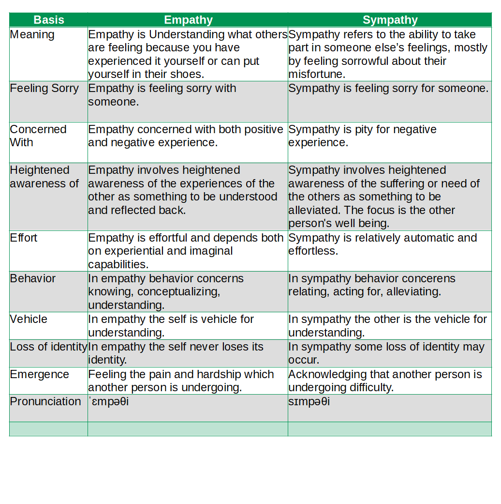

I Love Everything That Makes Me More Human.
Difference Between Empathy and Sympathy(Empathy vs Sympathy)

What is the main difference between Empathy and Sympathy?
The main difference between empathy and sympathy is Empathy is feeling sorry with someone whereas Sympathy is feeling sorry for someone. Empathy is Understanding what others are feeling because you have experienced it yourself or can put yourself in their shoes. Sympathy refers to the ability to take part in someone else’s feelings, mostly by feeling sorrowful about their misfortune.
It's generally seen as a good thing toshow either empathy or sympathy, and the person on the receivingend probably won’t be quibbling over which it is.
Both nouns are to do with feeling, and probably because theydescribe somewhat amorphous reactions tend to blur into eachother. However they have fairly different applications which areworth preserving.
| Basis | Empathy | Sympathy |
| Meaning | Empathy is Understanding what others are feeling because you have experienced it yourself or can put yourself in their shoes. | Sympathy refers to the ability to take part in someone else’s feelings, mostly by feeling sorrowful about their misfortune. |
| Feeling Sorry | Empathy is feeling sorry with someone. | Sympathy is feeling sorry for someone. |
| Concerned With | Empathy concerned with both positive and negative experience. | Sympathy is pity for negative experience. |
| Heightened awareness of | Empathy involves heightened awareness of the experiences of the other as something to be understood and reflected back. | Sympathy involves heightened awareness of the suffering or need of the others as something to be alleviated. The focus is the other person's well being. |
| Effort | Empathy is effortful and depends both on experiential and imaginal capabilities. | Sympathy is relatively automatic and effortless. |
| Behavior | In empathy behavior concerns knowing, conceptualizing, understanding. | In sympathy behavior concerens relating, acting for, alleviating. |
| Vehicle | In empathy the self is vehicle for understanding. | In sympathy the other is the vehicle for understanding. |
| Loss of identity | In empathy the self never loses its identity. | In sympathy some loss of identity may occur. |
| Emergence | Feeling the pain and hardship which another person is undergoing. | Acknowledging that another person is undergoing difficulty. |
| Pronunciation | ˈɛmpəθi | sɪmpəθi |
Empathy
Empathy is an affective response that stems from the apprehension or comprehension of another's emotional state or condition and is similar to what the other person is feeling or what would be expected to feel in the given situation.
Empathy is 'imaginative identification with someone else' and his orher situation, whether that situation is a good or bad one.
Examples
■ Your Friend was mad because he got an F in math test. You also had an F in math test , so u have empathy for your friend.
■ Stella told the teacher that she did not like the troubled main characters in the book because she did not have empathy for them.
■ As I had lost my job last year, I had empathy for my friend when she was fired.
■ She has empathy for those struggling with addiction since she is a recovering addict.
■ I did not have empathy for the characters.
■ It is important to be a good listener and show empathy with the individual's situation.
Sympathy
Sympathy is an emotional response stemming from the apprehension of another's emotional state or condition that is not the same as the other's state or condition but consists of feelings of sorrow or concern for the other.
Sympathy also involves the attempt to see things from theperspective of another person and carries the additional senseof 'compassion'.
Examples
■ I've received too much sympathy in the last few weeks.
■ I offer my deepest sympathy to his family, also to the band which I hope will carry on, given time to reflect.
■ Your Friend was mad because he got an F in math test. You got B in math test . You offer sympathy to your friend because no one likes to fail.
■ The class sent a sweet letter of sympathy to the teacher when her husband passed away. We didn't expect a sympathy vote in the election, but, happily, the underdog won.
■ Jo had never been dumped, but she had real sympathy for her friend who was going through a bad breakup.
■ We felt such sympathy for our neighbors who lost everything in the wildfires and donated what we could.
Hey there, I'm Nischal.
I am a student, a developer and I specialize in
standards-based Web Development(Django, JS, HTML, CSS ) and ML/DL.
I love Everything that makes me more Human. While
not Coding, I play and/or watch football.
Copyright text 2020 by Nischal!!
Newsletter
A rover wearing a fuzzy suit doesn’t alarm the real penguins. Then What Alarms The Penguins. Subscribe Me To Find Out.
Follow Me